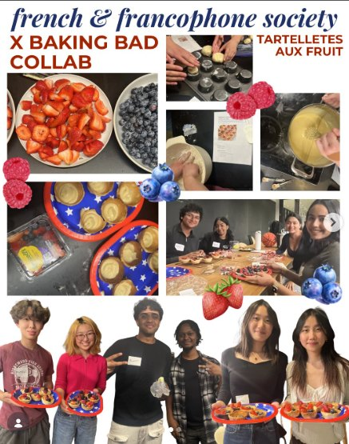
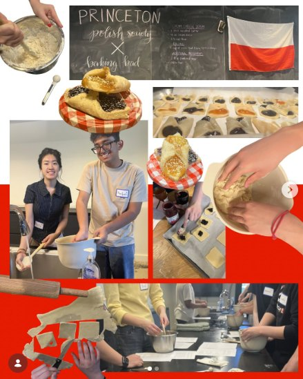
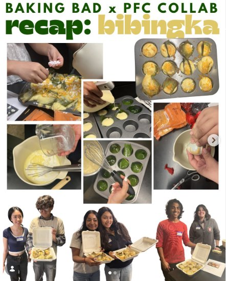
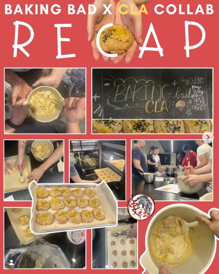
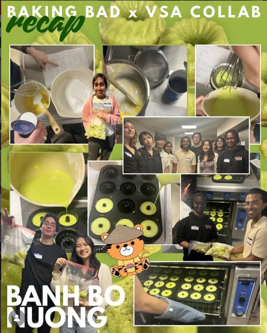

France

French & Francophone Society
Tartelettes aux fruits
Pastry shells blind-baked, cream piped, then every berry in the store arranged on top with alarming precision.
Every recipe comes from somewhere, and so does every person holding the whisk.

Why this page exists
Baking Bad partners with cultural groups across campus and hands them the kitchen. They bring the recipe, the technique, and the reason it matters at home; we bring the mixing bowls and a room full of people who want to learn it.
One night it's pastry cream and berries. The next it's banana leaves, or poppy seed filling, or pandan batter poured into a mold. Same counter, completely different evening.
Collaborations
Filter by where the recipe comes from, or tap a poster to see it full size.

Tartelettes aux fruits
Pastry shells blind-baked, cream piped, then every berry in the store arranged on top with alarming precision.

Filled Polish pastries
Dough rolled out by hand and spooned full of jam and poppy seed, with a chalkboard recipe and a flag on the wall.

Bibingka
Banana leaves in the tin, batter poured over, cheese on top — a rice cake that fills the room with smell before it's done.

Salted egg & sesame cookies
A chalkboard covered in cookie diagrams, dough scooped by the tray, and black sesame on absolutely everything.

Bánh bò nướng
Pandan-green batter poured into molds for honeycomb cake — the one where the inside matters more than the outside.
Your turn
If there's a dessert you grew up with, we'll build a night around it — and you get to be the one teaching it.